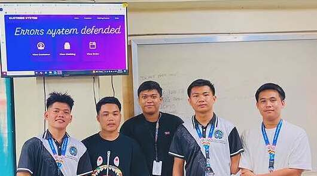

My Project

Clothing Management System
A cohesive graphic design project created using industry-standard tools to modernize a brand's visual identity and effectively connect them with their target audience.

Technical Drafting
I designed a clean, intuitive calculator interface that makes everyday math fast and effortless through a minimal layout and smart button hierarchy.